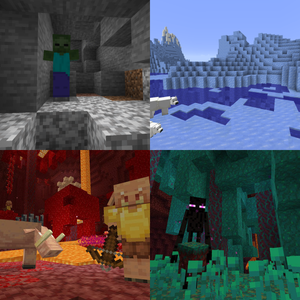

A mob (short for mobile, mobile entity, or mobile object)[1] is an AI-driven game entity. All mobs can be attacked or hurt (from falling, attacked by a player or another mob, falling into the void, hit by an arrow, etc. with the exception of natural creakings), and have some form of voluntary movement. Different types of mobs often have unique AI and loot.
Mobs spawn in various ways. Most mobs spawn naturally, depending on the light level, biome, and their surroundings. For example, most animals are found in bright areas on the surface, while hostile monsters are commonly found in the dark (whether it's a cave, monster room, mansion, or at night). Animals usually spawn upon chunk generation, while hostile monsters spawn and despawn in a certain radius around the player. Some mobs, including passive and neutral animals, and even hoglins, have the ability to be bred by the player, creating offspring. Villagers cannot be directly bred by the player, instead randomly breeding depending on the time of day and the number of beds, which allows players to manipulate their likelihood of breeding. Most mobs never spawn on transparent blocks, in water (except aquatic creatures), in lava (except for striders), on bedrock, or on blocks less than a full block tall (such as slabs placed on the bottom half). The exception is monster spawners, from which monsters can spawn naturally on any block including air. Some mobs (like the snow golem and the wither) require that the player "construct" them before being able to spawn. The iron golem can spawn naturally and can also be constructed. The ender dragon can be respawned with four end crystals. A rare occurrence of spawning are the jockey mobs, which is a mob riding another mob. source:https://minecraft.wiki/w/Mob
Many mobs despawn (cease to exist) after a certain amount of time if far enough from the player. In Java Edition, most passive mobs do not despawn, while most monsters do. In Bedrock Edition, almost all mobs despawn. Mobs can be prevented from despawning if they are named with a name tag, and in Java Edition
Mobs are affected by the environment in the same ways as the player; they are subject to physics, and they can be hurt by the same things that harm the player (catching on fire, falling, drowning, attacks from weapons, the /kill command, etc.).
Some mobs may be resistant or immune to certain hazards, such as some Nether mobs, which are immune to fire. All aquatic mobs except dolphins are immune to drowning. Mobs can ride minecarts and other mobs can climb up ladders.
When mobs are killed, they turn to smoke particles and drop items that may be useful resources.
Each type of mob in Minecraft has a certain AI (artificial intelligence) system with different behaviors and mechanics. Mobs ordinarily
wander around at random if there is a player within 32 blocks and usually avoid walking off blocks high enough to cause falling damage.
Some mobs have special behaviors, such as creepers, which will explode when close to a player, and endermen, which will teleport away when attacked. Some mobs are passive and will not attack the player unless provoked, while others are hostile and will attack the player on sight.
Some mobs can be tamed by the player, such as wolves and cats, which will then follow and defend the player. Other mobs, such as horses and llamas, can be ridden by the player.
Mobs can also interact with each other. For example, iron golems will attack hostile
mobs to protect villagers, and wolves will attack skeletons. Some mobs, such as villagers, have their own unique behaviors and professions, which can affect how they interact with the player and other mobs.
there are many more behaviors and mechanics associated with mobs in Minecraft, and they can vary greatly depending on the type of mob and the edition of the game being played. For more detailed information about specific mobs and their behaviors, you can refer to the Minecraft Wiki or other online resources dedicated to the game.
every mob has its own unique behavior and mechanics, and they can interact with each other in various ways. Some mobs are passive and will not attack the player unless provoked, while others are hostile and will attack the player on sight. Some mobs can be tamed by the player, such as wolves and cats, which will then follow and defend the player. Other mobs, such as horses and llamas, can be ridden by the player. Mobs can also interact with each other. For example, iron golems will attack hostile mobs to protect villagers, and wolves will attack skeletons. Some mobs, such as villagers, have their own unique behaviors and professions, which can affect how they interact with the player and other mobs.
End of Page